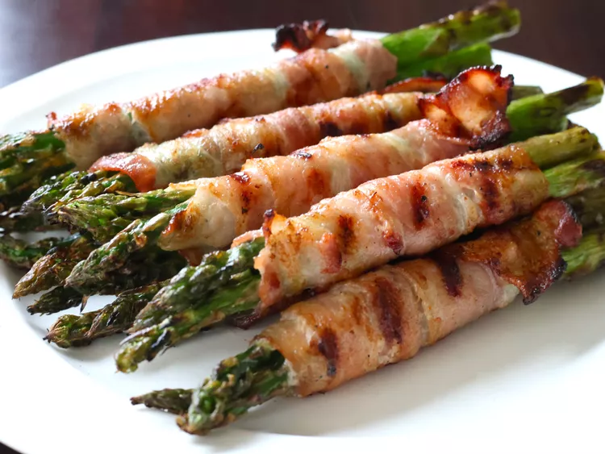

Bacon Wrapped Asparagus

Ingredients
- 1 pound fresh asparagus, trimmed
- 1 tablespoon olive oil
- 6 slices bacon, or more to taste
- ground black pepper to taste
Directions
Step 1
- Place asparagus in a large bowl. Pour olive oil over spears and coat each one. Wrap 2 to 3 spears with 1
slice of bacon. Repeat with remaining asparagus and bacon.
Step 2
- Preheat an outdoor grill for medium heat and lightly oil the grate. Grill asparagus until bacon is crispy, 3
to 4 minutes per side. Season with pepper
Back